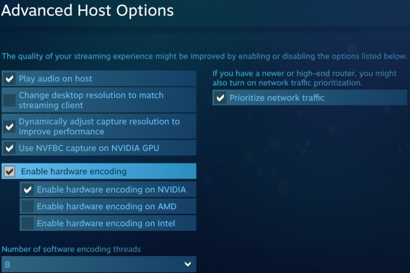

While trying to use my home lab as a game streaming host with Steam Remote Play (more on that another time), I noticed that Steam offers capturing the frame data with NvFBC:

NvFBC allows the encoder to read from the framebuffer in the GPU directly without first copying it to main memory and then back to the GPU for encoding. This is intended to improve the streaming and should scrape a few more ms of latency off. It’s part of the Nvidia Capture SDK and unfortunately it’s not available officially for consumer-grade cards:
Capture SDK can be only used on GRID, Tesla, or Quadro X2000+ (X = K/M/P/RTX) hardware products. Other configurations are not permitted under the end user license agreement terms and conditions.
So while my Quadro P400 does not support this, the good news is that according to Valve1, this restriction doesn’t apply for Steam and NvFBC is widely reported to be available and enabled on Windows Steam on all Nvidia cards (presumably thanks to a deal between Nvidia and Valve).
Unfortunately this doesn’t work on my Ubuntu home server. The connection details never switched to NvFBC and always stayed on Game Vulkan RGB + libyuv or Desktop PipeWire DMABUF and I quickly found reports of others having the same issue:
 ).
).
In theory there are ways to enable NvFBC with patched drivers on Linux ( ) for all apps and all cards. Unfortunately this is only available for the 64-bit drivers and steam is still a 32-bit app using the 32-bit drivers for nvidia. Understandably the nvidia-patch team doesn’t want to maintain the patch set for multiple platforms2 - there’s already a lot of different driver versions to maintain on 64-bit alone.
To debug this, I decided to dig further on my own.
-
First, I downloaded the Nvidia Capture SDK and quickly managed to run the NvEnc samples (
NvFBCToGLEncspecifically) with the patched driver from nvidia-patch. So I’m pretty sure my hardware setup is compatible with NvFBC. -
Second, to be absolutely certain of of the setup - I also tested directly passing the magic values unlocking NvEnc both in 32bit and 64bit builds on the samples themselves (with an unpatched driver). This was a bit more difficult, but still easy. All I had to do was pass the magic numbers to the
createHandleParams:
/*
* Create a session handle that is used to identify the client.
*
* Request that the GL context is externally managed.
*/
memset(&createHandleParams, 0, sizeof(createHandleParams));
// https://github.com/keylase/nvidia-patch/blob/8b0d2238c1391e7fadfc3df2aaf8d4dd398ed18d/win/nvfbcwrp/nvfbcwrp_main.cpp#L23
int magic[] = { 0xAEF57AC5, 0x401D1A39, 0x1B856BBE, 0x9ED0CEBA };
createHandleParams.dwVersion = NVFBC_CREATE_HANDLE_PARAMS_VER;
createHandleParams.bExternallyManagedContext = NVFBC_TRUE;
createHandleParams.glxCtx = glxCtx;
createHandleParams.glxFBConfig = glxFBConfig;
createHandleParams.pPrivateData = &magic;
createHandleParams.dwPrivateDataSize = sizeof(magic);After all of this, I’m pretty sure my setup is compatible with NvFBC. Now the question was figuring out why steam didn’t work. So I tried two things:
-
Checked for any references in any of the steam binaries - there’s no references to
libnvidia-fbc- onlylibnvidia-encode. -
LD_PRELOADboth 32bit and 64 binaries to catch any calls tonvFBCCreateInstanceandnvFBCCreateHandle(to set the correct magic values).
For the LD_PRELOAD I had to build a small library to preload before steam which I shared on Github Gist:
These calls never happen (and I also tested this against the unchanged NvFBCToGLEnc sample where preloading worked to inject the magic values ) - so my conclusion is that Steam on Linux probably doesn’t support NvFBC.
Caveat: Since this feature always included some undocumented Nvidia APIs and magic values, it’s possible that this has been obfuscated enough to slip through my experiments… Please let me know if you notice anything I might have missed